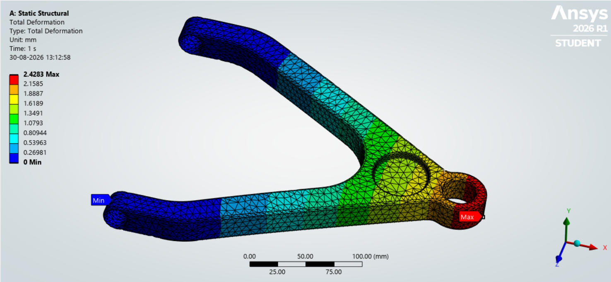
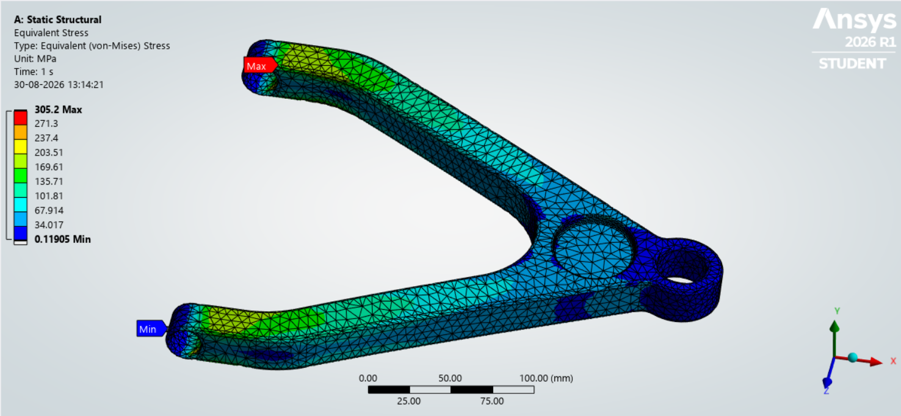

FEA & Machine Learning-Based Optimization of an Automotive Lower Control Arm
Structural analysis and data-driven optimization of a lower control arm by investigating the influence of component thickness and fillet radius on mechanical performance.
Optimizing a Critical Suspension Component
The lower control arm is a critical suspension component responsible for connecting the wheel assembly to the vehicle chassis while transmitting suspension loads.
This project focuses on analyzing and optimizing a lower control arm using Finite Element Analysis (FEA) and Machine Learning (ML).
The influence of structural thickness and fillet radius on the mechanical performance of the component is investigated under a representative wheel load.
Engineering Objectives
CAD + FEA Model
Develop and analyze the lower control arm model using CAD and Finite Element Analysis.
Geometry Investigation
Investigate the influence of component thickness and fillet radius on structural performance.
FEA Dataset
Generate an FEA dataset using multiple design configurations.
ML Prediction
Develop regression models to predict stress, deformation and factor of safety.
Design Optimization
Identify a promising design that balances structural strength and component weight.
FEA Dataset → Machine Learning
CAD Modelling
Lower control arm geometry developed in SolidWorks.
FEA Setup
Structural analysis performed in ANSYS under a representative wheel load.
Parameter Variation
Thickness and fillet radius varied across different configurations.
Dataset Generation
FEA outputs are collected for the different designs.
ML Regression
Regression models are developed to predict structural performance.
Design Space
Structural Response
FEA is used to evaluate the structural response of the lower control arm under the applied representative wheel load.

Total deformation distribution of the lower control arm.

Von-Mises stress distribution of the lower control arm.
Structural Metrics
Maximum von-Mises Stress
Primary stress metric used to evaluate structural response.
Total Deformation
Measures the structural displacement under applied loading.
Factor of Safety
Used as a structural safety performance indicator.
Component Mass
Included when considering the strength-weight trade-off.
Turning FEA Data into Predictive Models
Machine Learning models are developed using the FEA dataset to establish relationships between geometric parameters and structural performance.
The trained regression models are then used to predict structural performance and identify promising design configurations.
Linear Regression
Baseline regression model for establishing parameter relationships.
Decision Tree Regression
Non-linear regression approach for design-performance relationships.
Random Forest Regression
Ensemble-based regression model for predictive structural analysis.
Design Parameters
Predicted Performance
Tools & Technologies
From Simulation to Design Decision
Parameter Influence
Determine the influence of thickness and fillet radius on structural performance.
ML Prediction
Develop ML models capable of predicting FEA-based structural responses.
Model Comparison
Compare the prediction performance of different regression models.
Design Selection
Identify a suitable configuration based on strength and weight considerations.
Computational Efficiency
Reduce computational effort through ML-based performance prediction.
Current Status: Ongoing Project at IIT Guwahati.
Explore more engineering work
View the complete collection of personal and academic engineering projects.